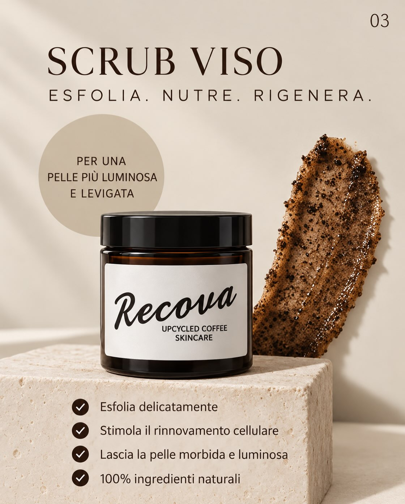
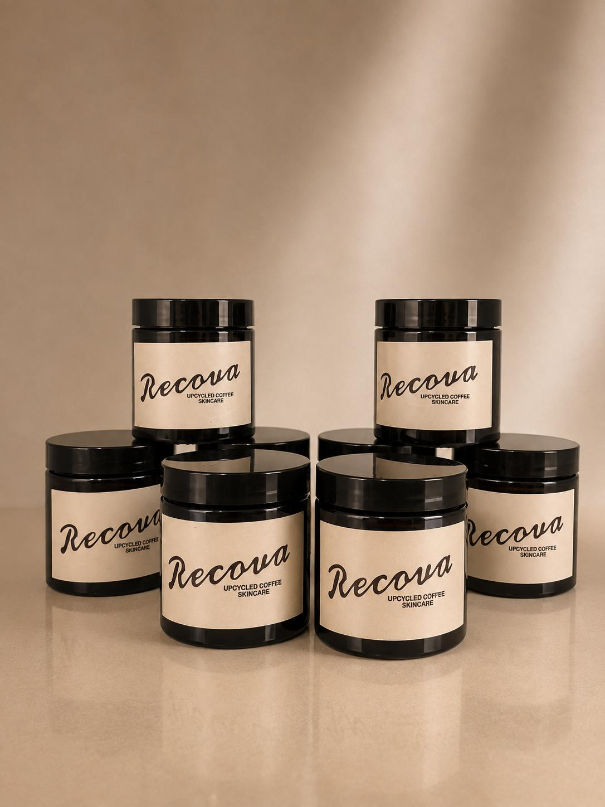
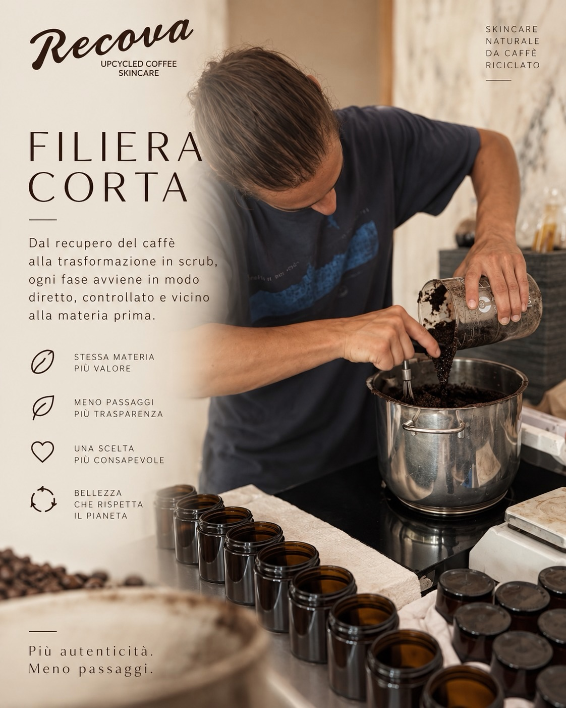
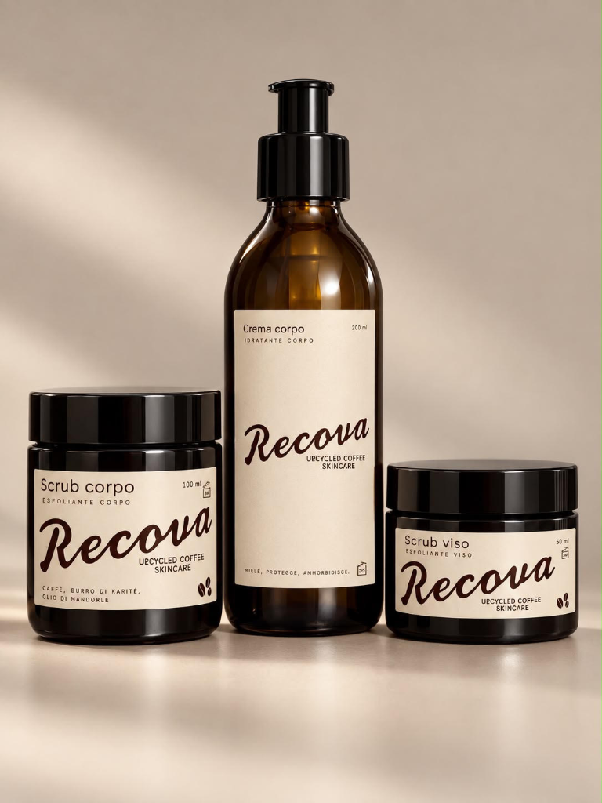
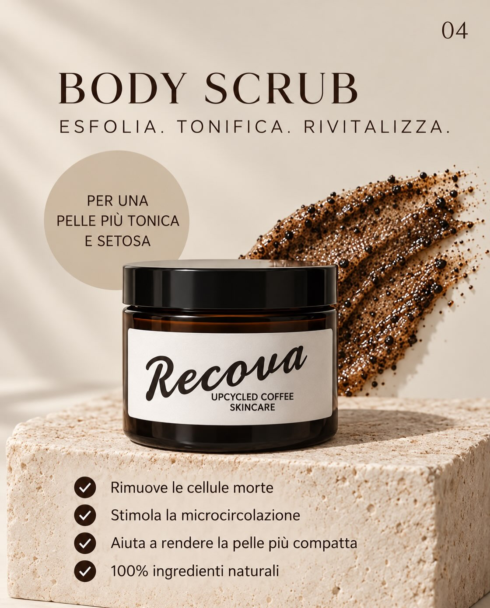
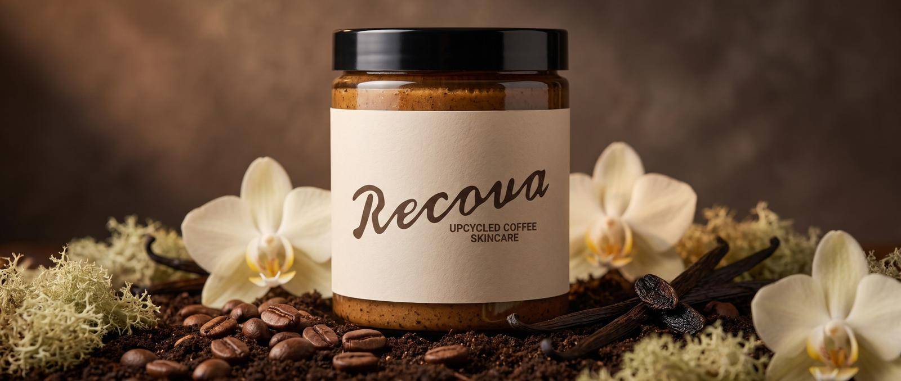

01VISO · ESFOLIA, NUTRE, RIGENERA
Scrub Viso
Una formulazione più delicata, pensata per esfoliare la pelle del viso e valorizzare il caffè recuperato.
Skincare essenziale e consapevole, nata dal recupero del caffè e da un modo più responsabile di prendersi cura della pelle.

RECUPERA · TRASFORMA · VALORIZZARecova trasforma il caffè esausto in una nuova risorsa per la skincare, attraverso una filiera corta e un approccio più consapevole.

Il caffè esausto viene raccolto all’interno di una filiera corta.
La materia viene lavorata per diventare una risorsa per la skincare.
Nascono prodotti pensati per prendersi cura della pelle.
Scopri gli scrub Recova, pensati per prendersi cura di viso e corpo.


01Una formulazione più delicata, pensata per esfoliare la pelle del viso e valorizzare il caffè recuperato.

02Un gesto dedicato al corpo: caffè recuperato e ingredienti di origine naturale in una skincare semplice e consapevole.

Recupero delle risorse, qualità delle materie prime e packaging riciclabile: scelte concrete per una skincare più consapevole.
Per informazioni sui prodotti, formulazioni e disponibilità, scrivici direttamente.